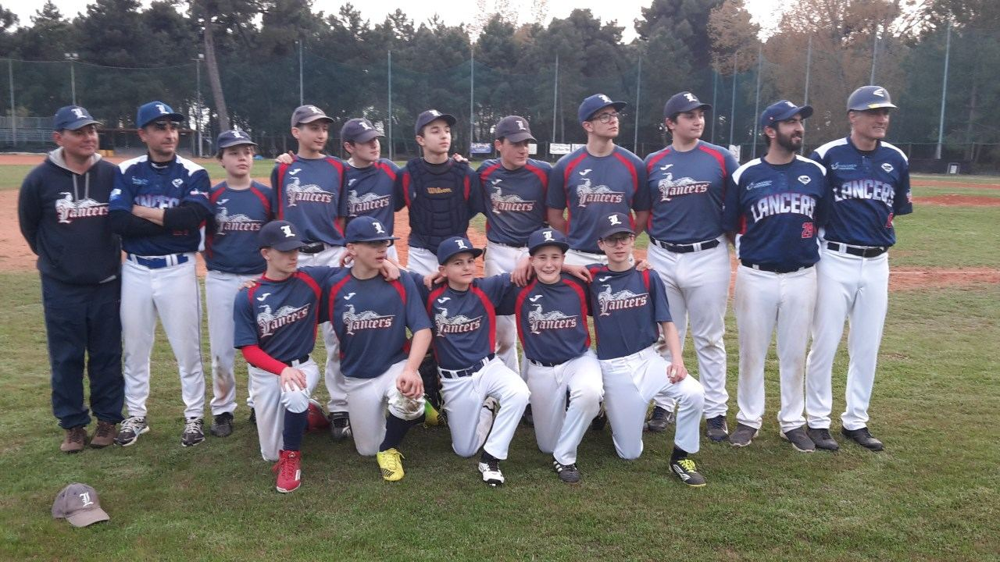

01 aprile 2017
La compagine U15, con il terzetto tecnico al completo, si è recata a far visita ai pari categoria del Massa.
Bella domenica di sole, gradevole la temperatura sugli spalti e finalmente squadra quasi al completo. Da segnalare subito il ritorno del nostro prima base Francesco Grassi. Se avevamo segnalato la sua mancanza alla prima uscita stagionale oggi, con soddisfazione, ne segnaliamo il ritorno che apparentemente, sembrerebbe a “tempo pieno” dato che non abbiamo scorto ne smorfie di dolore ne segnali di “risparmio”. Bene così!
Poi….. arriva la partita, finalmente. Già, perché c’è voglia di baseball….e quindi, il manager del Lucca, in assenza dell’arbitro, grida: PLAY BALLLLLLLLL.
Pronti via e si nota subito che nonostante la cortissima panchina del Massa (se non forse proprio assente) la squadra avversaria è tosta.
Primi due inning di gioco ottimamente lavorati dal solito grande Alessandro Ferrini che per ben due volte chiude l’inning con le basi piene: segnale di carattere!
Solo un punto da noi segnato nel primo inning contro i 2 degli avversari…..ma poi si inizia a battere e qualche assistenza in prima un po’ “allegra” del Massa ci abbuona qualche eliminato.
La partita si conclude al quinto inning dopo tre ore esatte di partita con il punteggio a nostro favore di 6 a 17.
Si è visto un bel baseball. Si è visto il lavoro dei nuovi tecnici. Si è visto qualche miglioramento e qualcosa su cui ancora lavorare.
Una sola nota su tutti. Un primo anno nella categoria, un classe 2004. Uno del quale avevamo già avuto modo di parlarne in passato. E’ uno che sta imparando a tener collegato il cervello. Sia chiaro…..abbiamo detto “sta imparando”! Però, Giovanni Beudean (per i tifosi Giovy) ieri ha fatto vedere che quando la materia grigia è collegata con il corpo, lui è veramente un gran bel giocatore. Prese difficili, giocate intelligenti, battute da manuale … insomma … bravo Giovanni: continua così!
Però l’attenzione non poteva che cadere anche su richieste di informazioni sul nostro Presidentissimo. Il Moro, utilizzando le nuove tecnologie, ci ha rassicurati sulle sue condizioni e tutti gli atleti, lo staff tecnico e i dirigenti accompagnatori hanno dedicato a lui questa partita con la speranza di rivederlo quanto prima. Forza Moro!
Purtroppo, a conclusione della giornata, abbiamo avuto il nostro pesce d’aprile.
Il mitico Gigio (per l’anagrafe Luigi Viliani) ha abbandonato il CTO fiorentino alle 2 di notte con un bel braccino ingessato per una frattura del polso. Mannaggia. Peccato.
Ma tutti gli sportivi sanno che ogni tanto una giratina con il gesso va fatta, specialmente se non si mette a frutto l’insegnamento ricevuto sulla corretta modalità di scivolata.
Vabbè… c’è tanta rabbia adesso in Gigio. Ma, testardo com’è, sappiamo che tornerà sul diamante prima possibile, ci potete scommettere!
Noi, come sempre, gridiamo forte FORZA LANCERS!